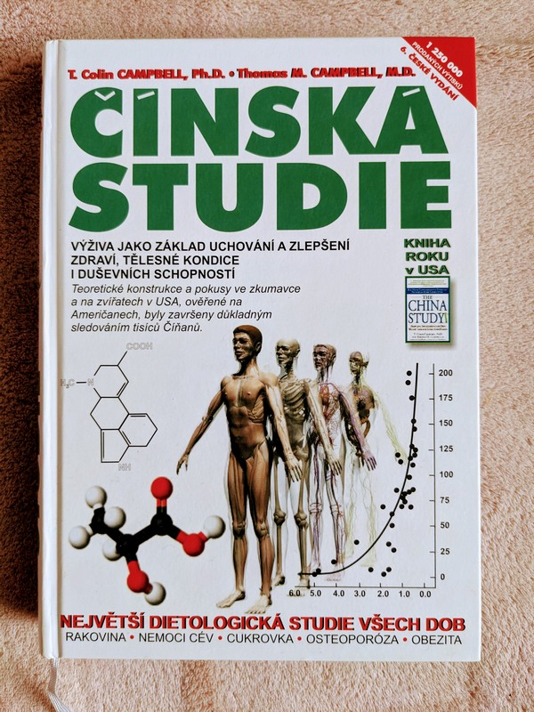
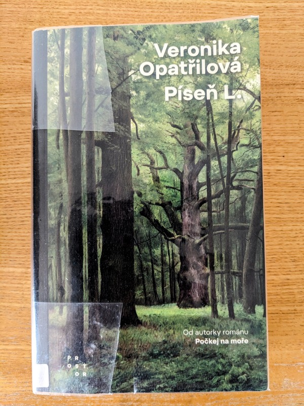
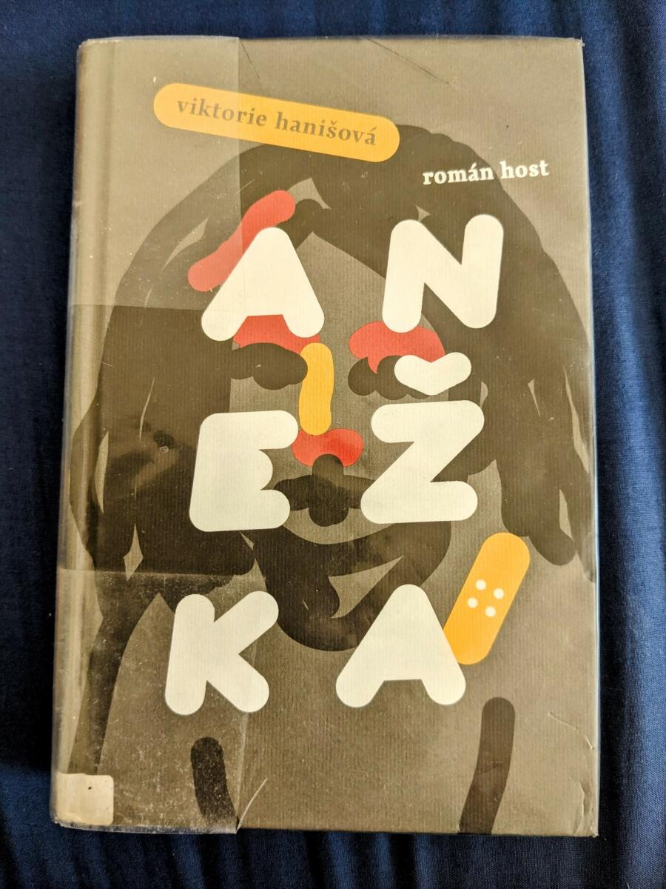
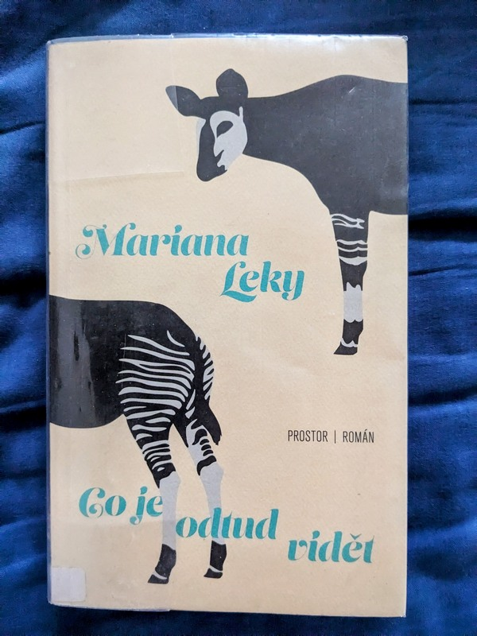
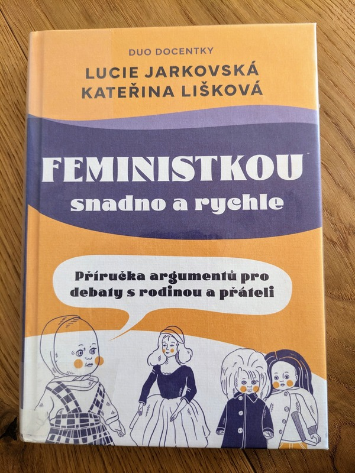
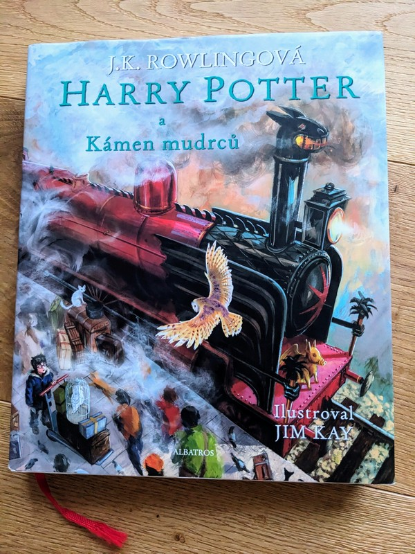
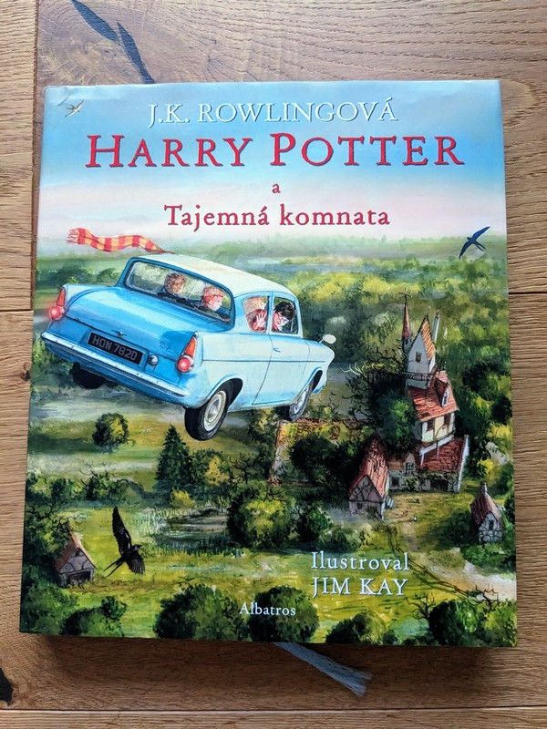

S rekapitulací zimní knihovničky jsem si dávala celkem na čas a člověk rychle zapomíná, tak jsem si dala předsevzetí, že se pokusím jarní recenze sepisovat s menším časovým odstupem, dokud mám přečtené knihy ještě v hlavě. Opět tu mám pár titulů, které by rozhodně neměly zapadnout, tak snad tu najdete trochu inspirace :-)
T. Colin Campbell, Thomas M. Campbell - Čínská studie
Na úvod tu mám jednu publikaci z KM knihovničky, u které pořád tak nějak nevím, co si myslet, neb kolem ní kolují protichůdné názory. Na jaře mě na chvilku inspirovala k zařazování více veganských pokrmů do jídelníčku, na druhou stranu jsem pořád tak nějak vnitřně přesvědčená, že tělo potřebuje živiny také z živočišné stravy. Tak či tak zní úžasně, kolik různých diagnóz může rostlinná strava pozitivně ovlivnit a určitě dává naprostý smysl zaměřovat se na její vyšší příjem. Campbellův pohled bych ale nebrala jako dogma, ale spíš nastínění jedné z možných cest.

Veronika Opatřilová - Píseň L.
Nejspíš je to tak s každým člověkem. Známe ho jen v určitou chvíli jeho příběhu a ten zbytek si neumíme představit. To všechno předtím, o čem nám vypráví, nebo to všechno, co si o něm pamatuje někdo jiný; to nikdy nepochopíme, neuvidíme. Pro nás bude každý člověk jen okamžikem, ve kterém ho známe my.
Tahle knížka mě na první dobrou dostala svou originální poetikou, která mě přiměla při čtení zpomalit a opravdu si vychutnat časté lyrické pasáže, které prokládaly děj. V knize sledujeme dva příběhy - jeden je zasazený do anglického středověkého hrabství, druhý se odehrává v současnosti a zavádí nás do laponských lesů. Na rovinu říkám (a nejsem sama), že bych tam tu druhou dějovou linii vůbec nepotřebovala a ve výsledku mě při čtení spíš obtěžovala a zdržovala, protože jsem chtěla vědět, kam se bude odvíjet ten první příběh. Jeho hrdinou je šlechtický sirotek Laurenc, který vyrůstá na hradě po boku svého staršího bratra a zároveň pána hradu, který Laurencovi diktuje, jak by měla vypadat jeho budoucnost. Laurenc ale netouží po bojích ani slávě - jeho křehká a citlivá duše miluje toulky hlubinami lesa, v nichž nachází útočiště i pochopení. V příběhu nechybí ani milostná zápletka, byť rozhodně ne taková, jakou byste čekali ;-)

Viktorie Hanišová - Anežka
Autorka Viktorie Hanišová si mě naprosto získala svým románem Houbařka a přestože jsem tak nějak tušila, že ani Anežka nebude zrovna lehké čtení, neodradilo mě to. Ve vyprávění příběhu se střídá ambiciozní Julie, která se po prodělaném potratu rozhodne v důsledku tikání biologických hodin pro adopci romské holčičky, a adoptovaná Anežka, která vyrůstá ve světě lží o jejím vlastním původu, které před ní i před okolím spletla její adoptivní matka. S postavou Julie jsem absolutně nesympatizovala a tím víc mě její chování k Anežce drásalo. Anežka byla posléze v pubertě taky celkem na ránu, ale tam se to dalo trochu pochopit, protože se snažila vyrovnat s tím, že její máma ji nepřijala takovou, jaká opravdu je a celý život ji šíleným způsobem cepovala. Suma sumárum: kniha skvělá, téma znepokojující a depresivní a asi už bych to (na rozdíl od Houbařky) neměla sílu číst znovu.

Mariana Leky - Co je odtud vidět
Zatímco jsem přihlížela, jak se dveře pomalu zavírají, vytanula mi na mysli Frederikova slova, že se rozhodl pro tuhle cestu, a já jsem si uvědomila, že jsem se ještě nikdy pro nic nerozhodla, že se mi vždycky všechno spíš přihodilo, a taky mě napadlo, že jsem se ještě k ničemu nevyslovila jasným ano, ale pokaždé jsem jen neřekla ne.
A abychom ty depky zase trochu rozptýlili, mám tu pro změnu jedno literární pohlazení :-) Přiznám se, že autorčina opěvovaná sbírka krátkých úvah Trápení všeho druhu, o které jsem tu psala tuším někdy loni v létě, mě až tolik nezaujala, ale tohle - to mě tedy chytlo za srdíčko :-)! Příběh, odehrávající se v poklidné malé vesničce v průběhu několika let, vypráví Luisa - nejprve děvčátko, postupem času mladá žena, jejíž rodiče jsou natolik zaměstnáni svou vlastní manželskou krizí, že roli životních mentorů za ně přebírá Luisina milující babička Selma a její přítel zvaný Optik. Do děje vstupuje ještě celá řada více či méně důležitých vesnických postaviček, které si při čtení (až si je všechny zapamatujete) postupně oblíbíte a na konci knihy zalitujete, že s nimi nemůžete strávit více času. V knize nic nechybí - poetika, romantická linie ani koncentrovaná životní moudrost - při tom všem však autorka netlačí na pilu a dávkuje jednotlivé ingredience s citem, aby se neproměnily v kýč.

Lucie Jarkovská, Kateřina Lišková - Feministkou snadno a rychle
Dvojice autorek, známá také pod přezdívkou “Duo docentky” přichází s publikací trochu prvoplánového názvu, ale cenného obsahu. Při čtení jsem si zavzpomínala na své první “setkání” s oběma dámami, když jsme se s Pavčou někdy ve druháku zapsaly na lákavě vyhlížející předmět “Sex, gender a společnost” za ještě lákavějších 6 kreditů. Myslím, že tenkrát jsem jeho náplň ještě nedokázala naplno docenit, ačkoliv obzory mi rozšířil velmi :-D S dnešními zkušenostmi samozřejmě vnímám jejich práci ještě úplně jinou optikou a cením si každé publikace, která se snaží lidsky, jednoduše a s nadhledem přiblížit podstatu feminismu i těm, na které slovo “feminismus” působí jako červený hadr. A asi tak nějak všechny tušíme, že tahle osvěta bude potřeba ještě dlouho…bohužel.

J.K. Rowlingová - Harry Potter a Kámen mudrců
J.K. Rowlingová - Harry Potter a Tajemná komnata
Obvykle mezi recenzemi neuvádím knihy, které čteme s O., ale dnes udělám výjimku. Před Vánoci se u nás naplno rozjelo Harry Potter období :-) Dobby je teď nejoblíbenějším plyšáčkem, v autě posloucháme podcast Neplecha ukončena a na všechny ostatní knížky se nám doma práší, protože každý večer čteme na pokračování Harryho. Během jara jsme se zdárně prokousali prvními dvěma díly a je úžasný, že O. už zkouší číst si v knížkách i sám. A mě tak moc baví vracet se spolu s ním do časů, kdy jsem Harryho Pottera poprvé četla já :-)… Jen za nás nevycházela takhle krásná série s ilustracemi Jima Kaye, která je hotovým uměleckým dílem a už jen listovat si v ní je prostě nádhera.

